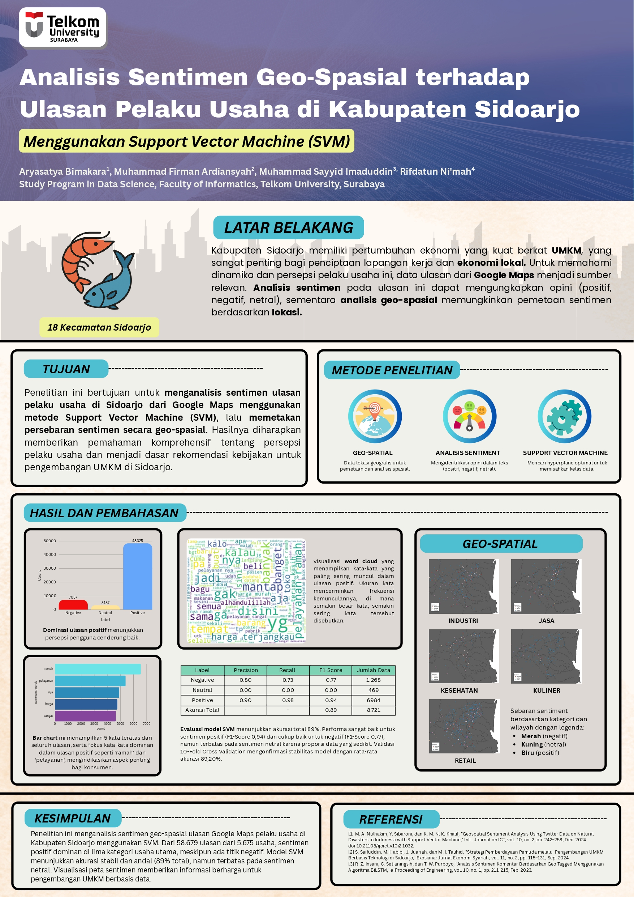

Penelitian ini bertujuan untuk menganalisis sentimen ulasan bisnis di Kabupaten Sidoarjo menggunakan pendekatan machine learning serta memetakan hasilnya secara geografis untuk memahami pola persepsi masyarakat terhadap sektor usaha secara lebih komprehensif.

Ulasan bisnis pada platform digital seperti Google Maps memiliki jumlah yang sangat besar dan bersifat tidak terstruktur, sehingga sulit dianalisis secara manual. Selain itu, analisis sentimen konvensional seringkali hanya fokus pada teks tanpa mempertimbangkan konteks geografis, padahal lokasi memiliki peran penting dalam memahami persepsi masyarakat secara lebih mendalam.
Mengembangkan model klasifikasi sentimen berbasis Support Vector Machine (SVM) serta mengintegrasikan hasilnya dengan analisis geospasial untuk mengidentifikasi distribusi sentimen berdasarkan lokasi dan kategori bisnis di Kabupaten Sidoarjo.
Hasil analisis menunjukkan bahwa mayoritas ulasan bersifat positif (~82%), yang mengindikasikan persepsi masyarakat terhadap layanan bisnis di Sidoarjo cenderung baik. Namun, terdapat klaster sentimen negatif pada beberapa wilayah tertentu, yang mengindikasikan adanya ketimpangan kualitas layanan antar lokasi.
Analisis spasial menunjukkan bahwa sektor seperti kuliner dan retail mendominasi jumlah bisnis, namun juga memiliki tingkat kompetisi tinggi, sehingga kualitas layanan menjadi faktor penentu utama dalam persepsi pelanggan.
Selain itu, model SVM menunjukkan performa yang sangat baik pada klasifikasi sentimen positif dan negatif, namun kurang optimal dalam mendeteksi sentimen netral akibat ketidakseimbangan data.
Meskipun model memiliki akurasi yang cukup tinggi (~89%), terdapat keterbatasan pada distribusi data, khususnya pada kelas netral yang jumlahnya jauh lebih sedikit dibandingkan kelas lainnya. Hal ini menyebabkan model cenderung bias terhadap dua polaritas utama (positif dan negatif).
Selain itu, pendekatan labeling berbasis rating berpotensi mengabaikan nuansa opini dalam teks, sehingga interpretasi sentimen tidak sepenuhnya mencerminkan kondisi sebenarnya. Hal ini membuka peluang untuk pengembangan model yang lebih kompleks seperti deep learning atau pendekatan berbasis contextual embedding di masa depan.
Integrasi antara analisis sentimen dan geospasial menghasilkan pemahaman yang lebih komprehensif terhadap persepsi masyarakat, tidak hanya dari sisi "apa" yang dirasakan, tetapi juga "di mana" persepsi tersebut terjadi. Hasil ini dapat dimanfaatkan sebagai dasar pengambilan keputusan yang lebih terarah bagi pelaku usaha maupun pemerintah daerah.